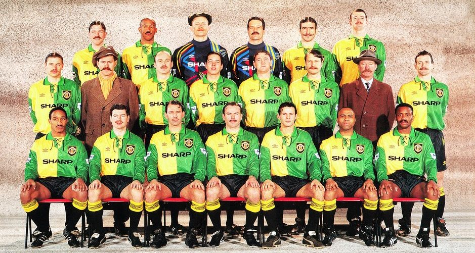

El Manchester United fue fundado en 1878 bajo el nombre de Newton Heath LYR Football Club. Con el tiempo, el club experimentó cambios de nombre y una rápida evolución hasta convertirse en uno de los clubes más exitosos del fútbol inglés y europeo.
Dos años después de conseguir el acceso a la élite del fútbol inglés, los Diablos Rojos fueron campeones de la Liga Premier en 1907/08 , una hazaña que se repitió en la temporada 1910-1911

Alex Ferguson fue contratado en 1986 y llevó al club a levantar 13 trofeos de la Premier League (de un total de 20 hasta 2013), los títulos de la Liga de Campeones de la UEFA (en 1998-99 contra el Bayern Munich - Alemania y en 2007-08 ante el Chelsea - Inglaterra) , más los títulos del Mundial de Clubes en 1999 y 2008 contra el Palmeiras (Brasil) y LDU (Ecuador), respectivamente.

En mayo de 2008, en Moscú, los Rojos sellaron su tercer triunfo en la Copa Europea 50 años después de la tragedia aérea de Múnich y 40 desde el primer triunfo de los Rojos en el 1968con una victoria llena de dramatismo sobre el Chelsea en tanda de penales.

La última vez que el Manchester United ganó la Premier League fue en la temporada 2012/2013, la última de Alex Ferguson como técnico. El conjunto inglés se impuso con 89 puntos, 28 victorias, 5 empates y 5 derrotas.